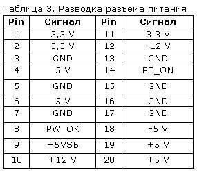

Средства диагностики оборудования. Разрешение проблем аппаратного сбоя
Диагностика аппаратных проблем
Введение
Большинство пользователей беззаботно работают на компьютере и не задумываются о том, что в какой-то момент компьютер может выключиться и больше не включиться вовсе. Да и достаточно часто возникает проблема – только что собранный или обновленный компьютер не включается. А еще хуже, если компьютер внезапно перестает работать. В таком случае главное – правильно идентифицировать поломку. Ведь может и ремонт не понадобится.
Отчего и почему?
Для начала стоит разобраться с причинами, которые могут вызвать такое явление. Как известно и пыль и неблагоприятные климатические условия ухудшают состояние компонентов ПК. Соответственно, выход железа из строя может быть вызван окислением контактов, попаданием пыли (и следственно, статического электричества) на микросхемы и разъемы, их перегрев. Перегрев также может быть вызван и плохим охлаждением.
Также все эти ужасы также могут стать следствием скачка напряжения, нестабильностью блока питания, а также неправильного заземления. Первое, что здесь можно порекомендовать – использовать сетевые фильтры, UPS и заземление компьютера. Но помните – лучше вообще не заземлять компьютер, чем заземлять его неправильно. Во-первых, заземлять корпус ПК и модем с телефонной линией надо отдельно. Не стоит заземлять корпус на отопительную батарею, поскольку на тот же стояк ваши соседи могут заземлять, например, холодильник, стиральную машину или перфоратор. В таком случае, эта «земля» уже станет фазой с разностью потенциалов. Нежелательно заземлять несколько устройств в одну «землю» одновременно. Кстати говоря, поэтому не рекомендуется бытовую технику подключать в один сетевой фильтр с компьютером, а вот монитор, принтер и системный блок лучше запитать от одного сетевого фильтра.
К неплохому фейерверку из микросхем может привести и закорачивание какого-либо провода или попаданием питания на земляной контакт. Поэтому всегда стоит следить за качеством подключения кабелей и их состоянием.
Типичные проблемы
Ну а если уж беда случилась, то придется ее диагностировать. Итак, начнем. Для начала приведем полезную статистику, чтобы примерно знать, где может быть собака зарыта.
Если компьютер в состоянии клинической смерти, то, прежде всего, надо сделать вскрытие и постараться найти характерный запах гари и выяснить, откуда он идет. Если его нет, то стоит проверить надежность подключения питания. Если проверка не помогла, то стоит включить ПК и проверить, крутятся ли вентиляторы блока питания (БП), корпуса и кулера процессора (заодно проверьте крепление кулера). Если не крутятся, и винчестер не издает характерного звука раскручивания шпинделя, то вышел из строя блок питания. Наличие напряжения на его выходе можно проверить тестером померив величину напряжения на контактах системной платы в том месте, где жгут проводов питания соединен с БП. Стоит подключить новый БП и проверить целостность остальных компонентов. Для начала их необходимо визуально осмотреть на предмет наличия горелых элементов.
Несмотря на то, что рабочий монитор ломается достаточно редко, стоит проверить, подаются ли на него сигналы с видеоадаптера. Для этого осциллографом на контактах 10 и 13 (земля и синхронизация соответственно) 15-контактного разъема D-Sub видеоадаптера, вставленного в материнскую плату, нужно проверить наличие рабочих сигналов.
Чтобы облегчить задачу поиска неисправного компонента, приведу наиболее часто встречающиеся симптомы поломок различного оборудования. Когда процессор выходит из строя, то чаще всего на его ножках видны следы гари.
В материнских платах наиболее часто встречающаяся поломка – выход из строя дискретных элементов, особенно конденсаторов в VRM (Voltage Regulation Module, представляет собой LC-фильтр). Да и сам этот блок может выгореть. Нередко электролитические конденсаторы попросту вздуваются, что требует их замены. Также часто встречающийся момент – «выбивание» транзисторов в районе северного моста, модулей памяти и VRM. Их можно определить по подгоревшим ножкам и потемнениям в этой области. Встречаются и выходы из строя тактовых генераторов и линий задержки, а также выгорание портов.
Также иногда встречающееся явление – нарушение контакта на плате. Это может быть вызвано помещением платы расширения в слот не до конца, прогибом платы, закорачиванием контактов на обратной стороне платы на корпус, нехваткой длины проводов, идущих от БП к материнской плате.
В винчестерах самое уязвимое место – перегревшийся контроллер и IDE-разъем. Сгоревший контроллер можно определить по потемнениям рядом с местами его крепления. Перегрев микросхемы приводит и к ухудшению контакта между контроллером HDD и гермоблоком. Механические проблемы двигателя винчестера можно определить по сильной вибрации корпуса HDD при вращении дисков. Массовые неполадки были замечены у дисков IBM серии DTLA и Ericsson (70GXP и 60GXP), Maxtor 541DX, Quantum Fireball 3, Fujitsu серии MPG.
В CD-приводах чаще всего выходит из строя оптико-механическая часть. В частности механизм позиционирования лазера и определения диска. Как правило, такая поломка вызывается неисправностью МСУ (микропроцессор системного управления), который вырабатывает управляющие сигналы, а также драйвера двигателя лазерного считывателя, который отвечает за сигнал возбуждения. Для их проверки необходимо промерить выходные сигналы на соответствующих контактах МСУ. Характерным симптомом неисправности МСУ является отсутствие перемещения лазерного считывателя при первоначальном включении питания. У флоппи-дисководов чаще всего встречаются механические поломки связанные с подъемником и прижимом дискеты.
Программно-аппаратная диагностика
Если все вышеперечисленное не помогло определить поломку, то придется перейти к программно-аппаратной диагностике. А для того, чтобы она прошла успешно необходимо точно знать, каков порядок включения устройств ПК.
Итак, рассмотрим порядок загрузки компьютера.
- После включения питания БП выполняет самотестирование. Если все выходные напряжения соответствуют требуемым, БП выдает на материнскую плату сигнал Power_Good (P_G) на контакт 8 20-контактного разъема питания ATX. Между включением ПК и подачей сигнала проходит около 0,1-0,5 с.
- Микросхема таймера получает сигнал P_G и прекращает генерировать подаваемый на микропроцессор сигнал начальной установки Reset. Если процессор не исправен, то система зависает.
- Если CPU жив, то он начинает выполнять код, записанный в ROM BIOS по адресу FFFF0h (адрес программы перезагрузки системы). По этому адресу находится команда безусловного перехода JMP к адресу начала программы загрузки системы через конкретный ROM BIOS (обычно это адрес F0000h).
- Начинается выполнение конкретного кода ROM BIOS. BIOS начинает проверку компонентов системы на работоспособность (POST – Power On Self Test). Обнаружив ошибку, система подаст звуковой сигнал, так как видеоадаптер пока еще не инициализирован. Проверяется и инициализируется чипсет, DMA и происходит тест определения объема памяти. Если модули памяти вставлены не до конца или некоторые банки памяти повреждены, то или система зависает или звучат длинные повторяющие сигналы из системного динамика.
- Происходит разархивирование образа BIOS в оперативную память для более быстрого доступа к коду BIOS.
- Инициализируется контроллер клавиатуры.
- BIOS сканирует адреса памяти видеоадаптера, начиная с С0000h и заканчивая C7800h. Если BIOS видеоадаптера найден, то проверяется контрольная сумма (CRC) его кода. Если CRC совпадают, то управление передается Video BIOS, который инициализирует видеоадаптер и выводит на экран информацию о версии Video BIOS. Если контрольная сумма не совпадает, то выводится сообщение «C000 ROM Error». Если Video BIOS не найден, то используется драйвер, записанный в BIOS ROM, который инициализирует видеокарту.
- ROM BIOS сканирует пространство памяти начиная с C8000h в поисках BIOS других устройств, таких как сетевые карты и SCSI-адаптеры, и проверяется их контрольная сумма.
- BIOS проверяет значение слова по адресу 0472h, чтобы определить, какая загрузка должна быть выполнена – «горячая» или «холодная». Если по этому адресу записано слово 1234h, то процедура POST не выполняется, происходит «горячая» загрузка.
- В случае холодной загрузки выполняется POST. Инициализируется процессор, выводится информация о его марке, модели и т.д. Выдается один короткий сигнал.
- Тестируется RTC (Real Time Clock).
- Определение частоты CPU, проверка типа видеоадаптера (в том числе встроенного).
- Тестирование стандартной и расширенной памяти.
- Присвоение ресурсов всем ISA-устройствам.
- Инициализация IDE-контроллера. Если используется 40-контактный шлейф для подключения ATA/100 HDD, то появится соответствующее сообщение.
- Инициализация FDC-контроллера.
- ROM BIOS ищет системную дискету или MBR жесткого диска и читает сектор 1 на дорожке 0 стороны 0, копирует этот сектор по адресу 7С00h. Далее происходит проверка этого сектора: если он оканчивается сигнатурой 55AAh, то MBR просматривает таблицу разделов (Partition Table) и ищет активный раздел, а затем пытается загрузиться с него. Если первый сектор оканчивается любой другой сигнатурой, то вызывается прерывание Int 18h и на экран выводится сообщение «DISK BOOT FAILURE, INSERT SYSTEM DISK AND PRESS ENTER» или «Non-system disk or disk error».
В общем-то все. Что касается последнего пункта, то ошибки указанные в нем говорят о неисправности винчестера (программной или аппаратной). Теперь вам остается только выявить, в какой именно момент перестает работать ваш компьютер. Если это происходит до появления сообщений на мониторе, то неисправность можно определить по звуковым сигналам. Наиболее часто встречающиеся звуковые сигналы приведены в таблице.
Стоит заметить, что звуковые сигналы могут отличаться от приведенных выше из-за различия версий BIOS. Если же и звуковые сигналы не помогли определить неисправность, то остается лишь уповать на аппаратную диагностику. Она производится несколькими средствами.
Аппаратная диагностика
Первое средство весьма банально, но вполне действенно. Работу отдельных блоков можно проверить, дотронувшись до них рукой, чтобы проверить их нагрев. После минутного включения должны греться чипсет, процессор, чипы памяти и блоки видеокарты. Если они кажутся теплыми, то этого достаточно, чтобы сделать вывод хотя бы о том, что на эти элементы подается питание. С большой долей вероятности они должны оказаться рабочими.
Второе средство более научно и требует некоторой инженерной подготовки. Заключается оно в измерении потенциалов на различных элементах. Для этого нужен тестер и осциллограф. Желательно иметь карту разводки материнской платы, поскольку она многослойная, и прохождение сигналов не так очевидно. Начать измерения стоит с силовых элементов входных цепей и стабилизирующих и шунтирующих конденсаторов, проверить наличие +3,3 и +5 В в соответствующих местах материнской платы, работу тактовых генераторов. После этого стоит проверить наличие штатных сигналов на выводах сокета процессора. Далее проверить наличие сигналов в слотах и портах. В последнюю очередь стоит заняться логическими элементами (хотя ремонт их часто оказывается делом неразумным). Для этого вам потребуется знание разводки портов и слотов. Эта информация приведена в таблицах.

Третье и последнее средство диагностики – профессиональные аппаратные средства диагностики. К ним относится использование диагностических карт типа ДП-1 и комплекса PC-3000, созданных компанией «РОСК». Диагностическая плата устанавливается в свободный слот материнской платы, и после включения ПК на ее индикаторе отображается код ошибки в шестнадцатеричном виде. Применение такой платы существенно повышает вероятность локализации неисправности. Использование ДП-1 рассчитано на корректную работу процессора, а CPU выходит из строя крайне редко.
На данный момент в России диагностические карты, тестовые ROM BIOS и другие средства диагностики производятся компанией ACE Laboratory.
При аппаратной диагностике следует иметь ввиду, что в большинстве случаев выходит из строя только одно устройство, и проще всего его выявить, заменив на аналогичное, гарантированно работающее.
Что касается блоков питания и периферийных устройств, то диагностика неисправностей в них – тема отдельного разговора, но по поводу мониторов можно дать ряд советов. Достаточно часто из строя выходит промежуточный строчный трансформатор, включаемый между предоконечным и выходным транзистором строчной развертки. Основной его неисправностью, как правило, бывает короткое замыкание витков. Этот трансформатор – часть высоковольтного блока строчной развертки. Это высокое напряжение подается на ЭЛТ. Поэтому часто отсутствие свечения на экране и отсутствие растра указывают на отсутствие высокого напряжения. Как правило, вертикальная полоса на экране также указывает на отказ блока строчной развертки. Проверить наличие высокого напряжение на ЭЛТ можно проведя рукой по поверхности экрана. Если высокое напряжение подается, то вы должны почувствовать некоторую вибрацию или потрескивания статического электричества.
Программная диагностика
Если же ваш компьютер все же включается, но работает нестабильно, зависает при загрузке, «выпадает» в синий экран, то это чаще всего является следствием переразгона, локального перегрева или «глючностью» памяти, а также ошибками работы HDD (к ним относится и «падение» Windows).
Стабильность их работы можно проверить под DOS, загрузившись c системной дискеты или диска. Для этого следует использовать утилиты CheckIT, PC Doctor, Memtest 86, Stress Linux, Norton Diagnostics, The Troubleshooter. Для профессионального тестирования и восстановления HDD следует использовать HDDUtility и MHDD, но они корректно работают только под MS-DOS 6.22. Первое, что требуется сделать с помощью них – проверить SMART-атрибуты состояния HDD. Также для диагностики, проверки и пометки bad-секторов можно использовать Norton Disk Doctor.
Следует помнить, что полноценную проверку железа можно произвести только под Windows, тестируя стабильность работы в burn-in тестах в течение не менее чем 24 часов. Среди таких тестов можно привести CPU Hi-t Professional Edition, CPU Stability Test, Bionic CPU Keeper, CPU Burn, Hot CPU Tester Pro, HD_Speed, DiskSpeed 32, MemTest.
А вообще, как известно, гораздо легче предупредить событие, чем исправить его последствия, поэтому гораздо легче регулярного (хотя бы раз в несколько недель) следить за параметрами выдаваемых блоком питания напряжений, смотреть SMART-параметры HDD (программы Active SMART, SMARTVision, SMART Disk Monitor), изучать температуру процессора, проверять наличие хорошего охлаждения и отсутствие посторонних звуков. Нелишним было бы и смазывание вентиляторов машинным маслом, как минимум раз в полгода.
Как выявлять и устранять проблемы с аппаратным сбоем
Семь методов:
- Проверка жесткого диска
- Проверка памяти
- Проверка питания
- Крепление материнских плат
- Остановить перегрев
- Случайные выключения
- Поиск профессиональной помощи
Вы когда-нибудь находили проблемы с компьютером? Удалено и переустановлено программное обеспечение и найти там что-то не так? В этой статье вы узнаете, как выявлять и устранять проблемы, связанные с сбоем компьютерного оборудования, если вы используете операционную систему Windows.
Метод 1. Проверка жесткого диска
1. Попытайтесь определить плохие сектора
Плохие сектора — это сектора на жестком диске, которые больше нельзя использовать. Это может быть связано с постоянным повреждением или невозможностью доступа ОС к ним. Если вы обнаружите, что система замерзает, получают ошибки остановки или другие ошибки, это может быть связано с плохими секторами. Используйте chkdsk и устраните эти проблемы.
2. Запуск chkdsk
Для этого нажмите «Пуск» (в нижнем левом углу), а затем вы увидите несколько параметров и выберите компьютер.
- Щелкните правой кнопкой мыши том, который вы хотите проверить, и нажмите на свойства.
- В диалоговом окне «Свойства» перейдите на вкладку «Инструменты».
- В разделе «Проверка ошибок» есть кнопка «Проверить сейчас». Нажмите на это, чтобы запустить chkdsk.
- В диалоговом окне «Проверить диск» выберите параметры, которые вы хотите запустить. Чтобы попытаться исправить плохие сектора, вы должны проверить второй вариант: «Сканировать и пытаться восстановить поврежденные сектора».
Если вы проверяете системный том, вы увидите сообщение «Windows не может проверить диск во время использования. Вы хотите проверить ошибки жесткого диска при следующем запуске вашего компьютера? »Нажмите« Запуск проверки диска », чтобы запустить проверку в следующий раз при запуске компьютера.
3. Запуск chkdsk из командной строки:
Нажмите «Пуск», введите cmd, затем щелкните правой кнопкой мыши cmd и выберите «Запуск от имени администратора».
- Введите chkdsk без параметров, чтобы увидеть состояние диска.
- chkdsk /? Отобразятся все возможные параметры команды.
Введите chkdsk c: \ f \ v, чтобы проверить и восстановить диск, а также отобразить любые сообщения очистки.
- Если вы хотите проверить том, отличный от C: измените «С» на соответствующую букву.
Если вы проверяете свой системный том, вы увидите сообщение:
- «Тип файловой системы — NTFS. Невозможно заблокировать текущий привод. Chkdsk не может работать, поскольку этот том используется другим процессом. Вы планировали бы, чтобы этот том был проверен при следующей перезагрузке системы? (Y / N)»
- Введите Y, а затем перезагрузите компьютер. Появится сообщение о том, что chkdsk запущен. Когда это закончится, Windows запустится автоматически.
Метод 2. Проверка памяти
1. Диагностика проблем памяти
Неисправная оперативная память может вызвать проблемы с системой. Некоторые из наиболее распространенных признаков проблемы с памятью — это ошибки остановки, которые система не запускает.
2. Если система не запускается
первое, что вы должны попробовать, это «Восстановление при запуске». Это попытается устранить любые ошибки на жестком диске или проблемы с конфигурацией программного обеспечения, которые могут помешать запуску компьютера в обычном режиме. Если после этого компьютер не запускается, запустите диагностику памяти Windows в диспетчере загрузки Windows.
3. Обратите внимание, что Windows Memory Diagnostic не может быть запущена во время работы Windows
Таким образом, вы можете запланировать его запуск при следующем запуске компьютера. Для этого перейдите в Панель управления, нажмите «Система и безопасность», а затем «Администрирование». Дважды щелкните значок «Диагностика памяти Windows», а затем выберите соответствующий параметр.
4. Откройте Диагностический планировщик памяти Windows
Введите mdsched в командной строке или нажмите «Пуск» и введите mdssched.
5. Запустите диагностику памяти Windows
через диспетчер загрузки Windows, если ваш компьютер не стартует. Чтобы получить доступ к этому, несколько раз нажмите клавишу пробела при запуске системы.
- Нажмите «Tab», чтобы выбрать «Диагностика памяти Windows», также доступны через «Параметры восстановления системы».
6. Обратите внимание, что по умолчанию Windows Memory Diagnostic запускает стандартный тест с двумя проходами
Существует три уровня тестирования: базовый, стандартный и расширенный.
7. Выберите количество проходов, выполняемых тестами
Больше проходов занимает больше времени, но с большей вероятностью можно найти проблемы с прерывистой памятью.
Способ 3. Проверка питания
1. Выключите питание и немедленно отключите компьютер, если из него выйдет дым
При необходимости используйте огнетушитель. Убедитесь, что огнетушитель одобрен для использования на электрических устройствах.
2. Если компьютер не делает ничего, когда вы нажимаете кнопку питания
первое, что нужно сделать, это проверить, что он подключен, и настенная розетка включена.
- Убедитесь, что настенная розетка работает. Вы можете сделать это, подключив что-то, что вы знаете, и смотрите, будет ли оно включено.
3. Убедитесь, что шнуры питания подключены к материнской плате
4. Убедитесь, что силовой кабель исправен
Вы можете сделать это с помощью мультиметра или просто поменять кабель на тот, который, как вы знаете, работает.
5. Убедитесь, что все внутренние или внешние выключатели питания включены
Убедитесь, что напряжение правильно установлено на источнике питания
7. Проверьте источник питания, используя его на другом компьютере
Если он не работает, замените его.
8. Если компьютер застывает до запуска операционной системы
возможно, что источник питания может быть недостаточно мощным. Убедитесь, что источник питания обеспечивает необходимую мощность для питания машины.
9. Обратите внимание, что если компьютер выключается с произвольными интервалами
проблема может быть связана с вентилятором питания. Убедитесь, что вентилятор работает.
10. Убедитесь, что вентилятор на материнской плате работает правильно
Система может быть отключена, поскольку она перегревается. Убедитесь, что ваша система чиста от пыли, при необходимости замените вентилятор.
Способ 4. Фиксация материнской платы
1. Запустите диагностическое программное обеспечение материнской платы
(если оно предоставлено производителем), чтобы убедиться, что материнская плата не повреждена.
2. Устранение неполадок, когда вы не слышите звуковые коды, доступные для просмотра любого видео
- Убедитесь, что компьютер получает питание и что монитор включен и подключен.
- Удалите все внешние аксессуары, такие как беспроводные карты или внешние диски.
- Убедитесь, что вентилятор питания работает. Если это не так, проблема, скорее всего, будет связана с источником питания.
- Откройте компьютер и визуально осмотрите материнскую плату. Если он почернел или расплавлен, замените материнскую плату.
- Убедитесь, что все необходимые разъемы питания подключены к материнской плате и что любой внутренний выключатель питания включен. Также убедитесь, что источник питания настроен на правильное напряжение.
- Убедитесь, что материнская плата, ОЗУ и процессор установлены правильно.
- Если на материнской плате есть перемычки, проверьте руководство, чтобы убедиться, что они находятся в правильном положении.
3. Если ни один из этих шагов не сработал
установите BIOS обратно по умолчанию, удалив батарею с материнской платы в течение 30 минут.
4. Примите меры, если вы слышите звуковые сигналы, но компьютер не запускается
Удалите все внешние аксессуары, например, беспроводные или внешние диски. Просто оставьте монитор, клавиатуру и мышь подключены. Делая это, вы выделяете устройства, которые могут вызывать звуковые коды.
Обратитесь к руководству или веб-сайту производителя, чтобы проверить значение звукового сигнала, который вы слышите.
Способ 5. Остановить перегрев
1. Потеря мощности после нескольких минут работы является симптомом перегрева
2. Убедитесь, что вентилятор процессора работает
3. Измените положение компьютера, чтобы обеспечить циркуляцию воздуха вокруг него
Это особенно важно с ноутбуками, убедитесь, что ни один из портов охлаждения не заблокирован.
4. Убедитесь, что ни один из вентиляторов не заблокирован
Это, очевидно, приведет к перегреву охлажденной зоны. Вентилятор также может выгорать.
5. Если возможно, проверьте температуру компьютера в BIOS или диагностическую программу
6. Удалите пыль в компьютере
Mетод 6. Случайные выключения
1. Запустите Windows Memory Diagnostic, чтобы проверить, что ОЗУ не является неисправной
2. Используйте диагностическое программное обеспечение материнской платы
чтобы определить, является ли материнская плата источником проблемы. Диагностическое программное обеспечение может быть получено от производителя материнской платы
Метод 7. Поиск профессиональной помощи
1. Попросите помощи у профессионала
Нет ничего плохого в просьбе о помощи
- Профессионал может заметить то, что вы, возможно, пропустили